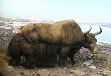

Yak

Yaks are large, shaggy-haired bovines native to the Himalayan region and are well adapted to high-altitude environments.
Physical Characteristics
- Size: Yaks vary in size, with males being larger than females. Adult yaks can weigh between 600 to 1,200 kilograms.
- Coat: They have a long, dense coat that provides insulation against cold temperatures and protects them from harsh weather.
- Horns: Both males and females can have horns, which are curved and pointed. Horns are used for defense and for digging in snow.
Behavior and Habitat
- Habitat: Yaks are found in the high-altitude regions of the Himalayas, including Tibet, Nepal, and surrounding areas.
- Adaptation: Yaks are well adapted to life in extreme environments, with thick coats and a strong respiratory system that helps them cope with lower oxygen levels at high altitudes.
- Domestication: Yaks have been domesticated by local communities for their milk, meat, and hides, as well as for use as pack animals.
Diet
Yaks are herbivores and graze on a variety of grasses, herbs, and other plants found in their mountainous habitats.
Conservation Status
Yaks are not considered globally threatened. However, some local populations face challenges due to overgrazing, habitat loss, and climate change.
Interesting Facts
- Yak Products: Yaks provide various resources for local communities, including milk, meat, hair for textiles, and dung for fuel.
- Domestic Use: Domesticated yaks are used as pack animals to transport goods across rugged terrain in the Himalayas.
- Wild Yaks: Wild yaks, known as the wild yak, still inhabit remote areas of Central Asia and are considered the largest wild bovines.